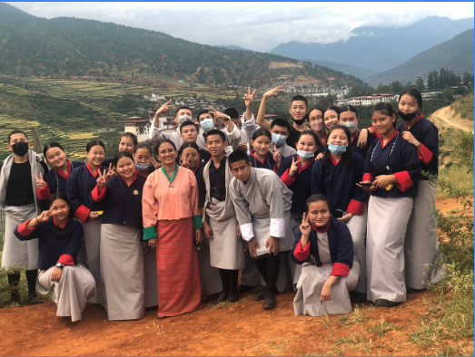
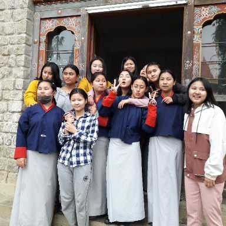

Age 5.5: Began my schooling at Shachapang Primary School in the serene village of Rawabi, Lhuentse Dzongkha, a hidden gem that later closed its doors due to a lack of students.
Early School Years: Transitioned to Kuzhugchen Middle Secondary School for almost a year, followed by two years at Dotha Lower Secondary School in Paro, where I explored life and agriculture amidst the lush landscapes.
Grade 5: Completed fifth grade at Shaba Primary School, Paro.
High School: My family relocated to Phuentsholing, where I joined Phuentsholing Higher Secondary School. Here, I spent my high school years growing both academically and personally.
2019 – COVID-19: Relocated to Khuruthang, Punakha. Learned resilience and independence.
Present: Pursuing Bachelor in Secondary Education at Samtse College of Education.

A visual representation of my educational journey, highlighting key milestones and experiences.

Reflecting on my past experiences and the journey that has shaped me into who I am today.